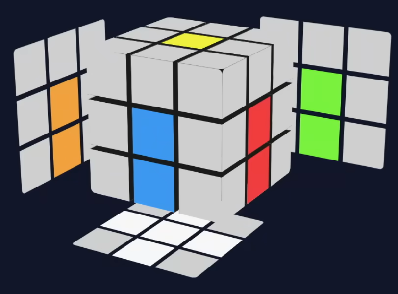
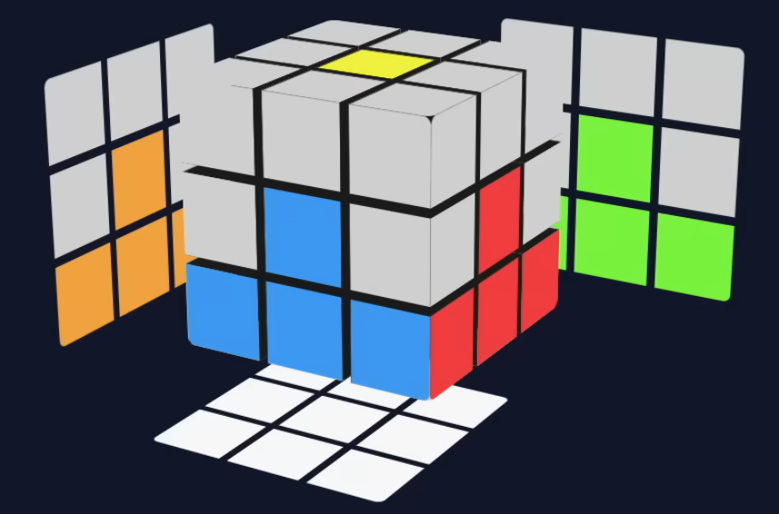
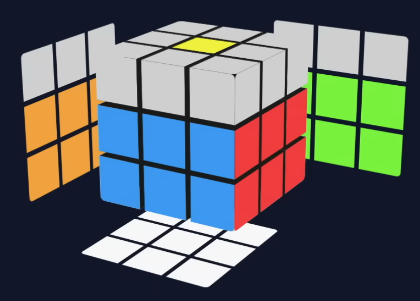
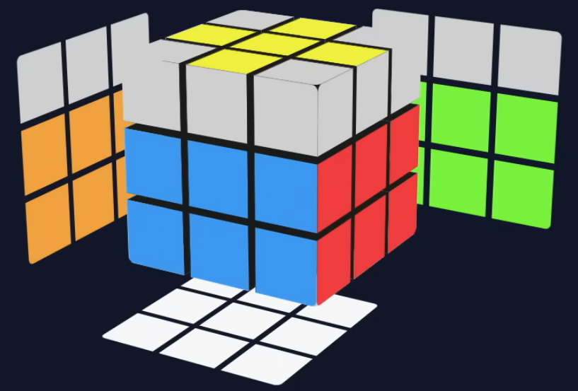
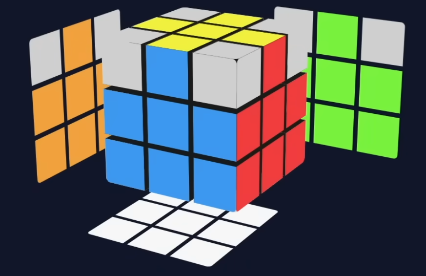
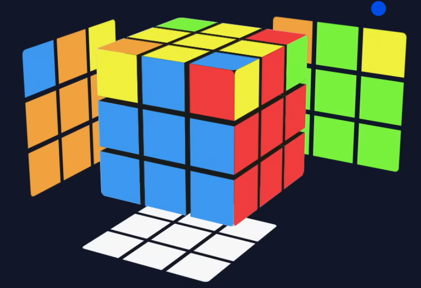
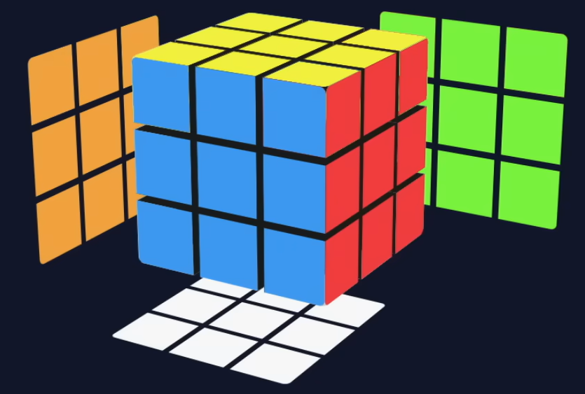

Centro
São as 6 peças centrais do cubo. Elas são fixas e indicam a cor da face. Por exemplo, o centro amarelo indica que a face deverá ser toda amarela.
O método básico é a forma mais simples de se resolver o cubo mágico
São as 6 peças centrais do cubo. Elas são fixas e indicam a cor da face. Por exemplo, o centro amarelo indica que a face deverá ser toda amarela.
O cubo possui 12 meios, que são as peças que têm 2 cores.

Temos um total de 8 quinas, que são as peças que têm 3 cores e ficam nas pontas do cubo.
É importante sabermos como ler os movimentos do cubo, pois com isso iremos solucionar o Cubo Mágico, nós vamos utilizar algumas fórmulas, que são sequencias de movimentos que podem ser escritos (traduzidos) com letras. Parece muito complexo, mas é extremamente simples e intuitivo.
Cada lado do cubo é representado pela sua inicial em inglês. Se a letra estiver sozinha significa que o movimento é no sentido horário. Se estiver acompanhada de um apóstrofo, significa que é no sentido anti-horário. E se for seguida do número 2, significa que é um movimento duplo.

R - Right / Direita horário

R' - Right / Direita anti-horário

R2 - Right / Direita duplo

L - Left / Esquerda horário

L' - Left / Esquerda anti-horário

U - Up / Topo horário

D - Down / Base horário

F - Front / Face horário

B - Back / Atrás horário
Iremos passar por cada uma dessas etapas para realizar a conclusão

Etapa 1
Margarida (Cruz inicial) e Cruz Branca

Etapa 2
Primeira camada

Etapa 3
Segunda camada

Etapa 4
Cruz amarela

Etapa 5
Resolver as Bordas da Terceira Camada

Etapa 6
Orientar os Cantos da Terceira Camada

Etapa 7
Conclusão do Cubo
Objetivo:

Essa etapa é bem simples, só é necessário colocar as laterais brancas junto com o centro amarelo. Vale dizer que nessa etapa não é necessário uma fórmula, afinal são muitas possibilidades e acaba sendo mais fácil posicionar por conta própria, do que aprender possíveis fórmulas que talvez nunca vão acontecer.
Não possui uma fórmula
Objetivo:
Aqui iremos alinhar as cores das laterais brancas com o centro da segunda cor, e assim girar a face duas vezes. Como exemplo, a peça branca azul, deve estar alinhada com o centro azul, girando ela duas vezes o lado branco estará junto com o centro branco. Aqui também não possui uma fórmula exata.
Não possui uma fórmula
Video Suporte:
Objetivo:
Nesta etapa iremos montar a face branca, Aqui também não é muito necessário uma fórmula, por mais que no vídeo ensine uma, Basicamente os canto devem estar de acordo com cada centro, ou seja, O canto branco-vermelho-azul, tem que estar onde essas três cores se encontram.
Não possui uma fórmula
Video Suporte:
Objetivo:
Nesta etapa iremos montar a segunda camada, que se consiste nos lados do cubo, A partir daqui usaremos fórmulas para mover uma peça no seu devido lugar, Você irá posicionar a cor de mesmo centro juntos, e analisar para qual lado a segunda cor deve estar, na direita ou esquerda.
Caso a cor de cima seja para esquerda:
U' L' U' L U
Gire o Cubo Para Direita
R U R' U'
Caso a cor de cima seja para direita:
U R U R' U'
Gire o Cubo Para Esquerda
L' U' L U
Video Suporte:
Objetivo:
Nesta etapa iremos formar uma cruz amarela na parte superior, Há três possibilidades, que tenha uma linha amarela, ou um L, ou nenhuma borda amarela. Faça a fórmula na parte em que não possui bordas amarelas, No caso do L fica mais fácil fazer onde ele fica espelhado para esquerda.
Fórmula: F R U R' U' F'
Video Suporte:
Objetivo:
Nesta etapa iremos realocar a segunda cor de cada borda da cruz amarela para que estejam juntas a sua mesma cor de centro. Duas das quatro bordas estarão correspondendo com seu centro, com isso podemos ter dois casos, um em que elas estejam viradas uma para outra, como exemplo, vermelho e laranja ou em que elas estejam lado a lado, como vermelho e verde. Caso estejam viradas usaremos a fórmula em uma das duas faces que não estejam correspondendo com o seu centro. Caso estejam lado a lado usaremos a formula na face esquerda da cor correspondente, como exemplo, na face verde e laranja, aplicaremos a fórmula na face vermelha.
Fórmula: R U R' U R U2 R'
Video Suporte:
Objetivo:
Nesta etapa iremos colocar dois cantos da terceira camada correspondendo com seus centros Aqui existe várias possibilidades de como cada canto está, então o mais fácil é repetir a fórmula até que dois desses quatro cantos estejam no lugar certo, O melhor a se fazer é aplicar a fórmula onde um dos cantos já esteja resolvido, pois ele irá continuar no mesmo lugar.
Fórmula: U R U' L' U R' U' L
Video Suporte:
Objetivo:
Esta etapa é a mais sensível, pois um erro e terá que fazer tudo do início, A face amarela deve estar voltada para você, realize a fórmula no canto que está com as cores diferentes de seus centros, repita a fórmula de início a fim, até que o lado amarelo esteja junto com o seu centro, gire a face amarela 'F', e repita a fórmula no canto que não está de acordo com o centro amarelo, quando este canto estiver coincidindo com seus centros retorne a face amarela 'F', até que todos os lados estejam concluidos.
Fórmula: U R' U' R
Video Suporte: